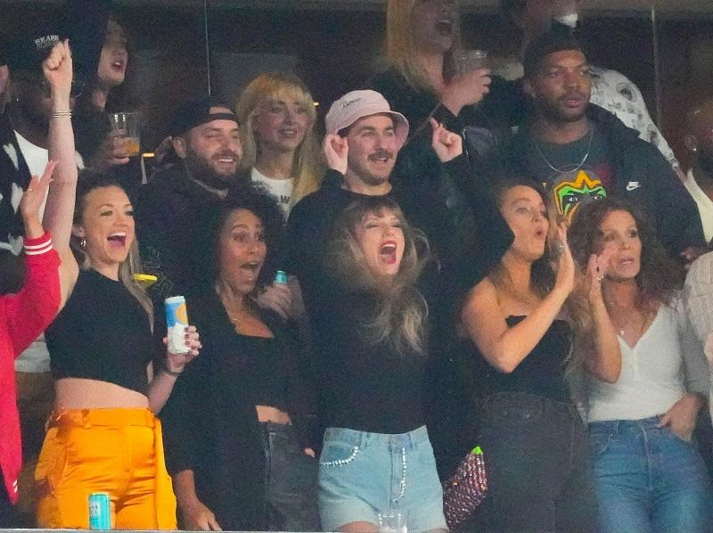

Published January 30, 2024
Kansas City Chiefs tight end Travis Kelce is sure to be in Las Vegas for the Feb. 11 Super Bowl showdown with the San Francisco 49ers but whether his girlfriend, mega-pop star Taylor Swift, will also be present to add some stardust to the occasion is looking like a game time decision.
Swift was in the stands cheering and was then caught on camera congratulating her boyfriend with a hug and kiss after the Chiefs 17-10 victory over the Baltimore Ravens on Sunday, immediately sparking speculation whether one of the world's biggest selling recording artists will be at Allegiant Stadium.
A regular at Chiefs games all season, Swift could miss the biggest game of all due to scheduling conflicts with her "Eras Tour" which has her performing in Tokyo on Feb. 10, the night before the Super Bowl.
With the time difference Swift could get to Las Vegas for kickoff on Sunday but will then have to quickly get back on a plane for three concerts in Melbourne, Australia staring Feb. 16.
Some fans will be flying Air Swift to the Super Bowl, with United Airlines on Monday adding additional direct flights to Las Vegas from Kansas City with specially themed Swift related flight numbers.